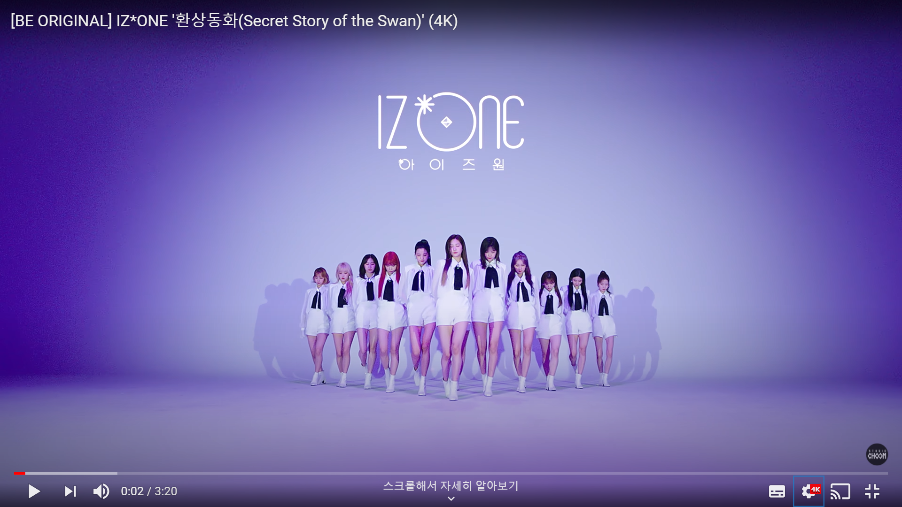

IZ*ONE은 2018년 8월 31일 엠넷의 서바이벌 오디션 프로그램 프로듀스 48에서 선발되어 동년 10월 29일에 데뷔한 한국-일본 합작 12인조 프로젝트 걸그룹이다. 그룹명 IZ*ONE은 12명의 소녀들이 하나가 되는 순간이라는 뜻이며, 영문으로 표기할 땐 IZ와 ONE 사이에 *(별표 기호)를 넣어 IZ*ONE으로 표기한다. 2021년 3월 14일 ONE, THE STORY 콘서트를 끝으로 모든 공식 활동을 종료하였고, 동년 4월 29일 프로젝트 활동을 마무리하였다.
ㅇㅇ